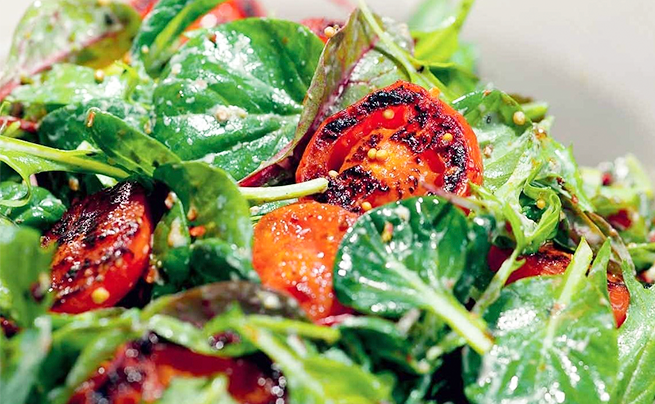
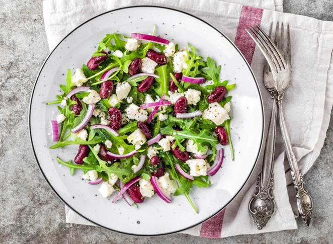

1. Кальмары очистить от пленок, промыть и выложить на салфетку, чтобы впитались излишки влаги. Копченый сулугуни натереть на крупной терке.
2. На помидорах с нижней стороны сделать неглубокие надрезы крест-накрест. Опустить их на полминуты в кипяток и сразу остудить в воде со льдом, а затем снять кожицу, оставив на шести помидорах зеленые черешки.
3. Со стеблей петрушки оборвать листья и мелко нарезать, зубчик чеснока натереть на специальной мелкой терке для чеснока.
4. На этой же терке натереть и два помидора. Овощи и зелень заправить соком половины лимона, посолить и поперчить по вкусу, еремешать.
5. Кальмаров (со щупальцами) вместе с крупно нарезанным перцем и цукини обжарить на сковороде гриль на оливковом масле — до появления золотистой решетки с обеих сторон, поперчить и посолить по вкусу.
6. Выложить в глубокую тарелку овощи, полить их заправкой, сверху — кальмаров, помидоры черри. Посыпать тертым сыром и полить оливковым маслом.
САЛАТ ИЗ ОБЖАРЕННЫХ ПОМИДОРОВ
4 порции
15 минут
ИНГРЕДИЕНТЫ

Помидоры
400 г
Салатные листья
1,5 стакана
Чеснок
6 зубчиков
Натуральный йогурт
10 ст. л.
Оливковое масло
5 ст. л.
Соль
по вкусу
Молотый черный перец
по вкусу
Энергетическая ценность одной порции
КАЛОРИИ
379 ККАЛ
БЕЛКИ
16 ГРАММ
ЖИРЫ
32,3 ГРАММ
УГЛЕВОДЫ
8,1 ГРАММ
Инструкция приготовления
1. Для соуса смешать йогурт с половиной оливкового масла, добавив соль и перец.
2. Помидоры нарезать кольцами. Если помидоры мелкие, то нарезать их на 4 дольки. Обжарить на оливковом масле в течение 5 минут с зубчиками чеснока.
3. Готовые помидоры выложить на тарелку, полить их йогуртовым соусом, сверху выложить микс салатных листьев.
4. Затем легка посолить. При подаче можно украсить парой капель оливкового масла.
САЛАТ ИЗ КРАСНОЙ ФАСОЛИ
4 порции
7 минут
ИНГРЕДИЕНТЫ

Молотый черный перец
по вкусу
Консервированная фасоль
400 г
Соль
по вкусу
Лимон
1 штука
Чеснок
2 зубчика
Оливковое масло
50 мл
Рукола
100 г
Творожный сыр
100 г
Красный лук
50 г
Энергетическая ценность одной порции
КАЛОРИИ
941 ККАЛ
БЕЛКИ
11,1 ГРАММ
ЖИРЫ
23 ГРАММ
УГЛЕВОДЫ
22,7 ГРАММ
Инструкция приготовления
1. Вскрыть две банки красной фасоли в собственном соку, слить сок и промыть фасоль холодной водой. Желающие использовать не баночную, а самостоятельно сваренную фасоль должны задуматься о приготовлении этого салата еще с вечера. Сначала замочить бобы на ночь, а потом варить их на медленном огне до готовности.
2. Готовую фасоль смешать с мелко нарубленным красным луком, зеленью, например, рукколой, давленым чесноком, оливковым маслом, лимонным соком и творожным сыром.
3. Посолить, поперчить, оставить на 2 минуты, а затем подавать к столу.